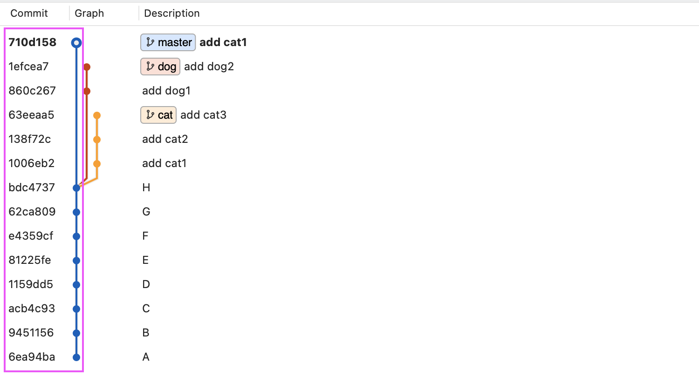
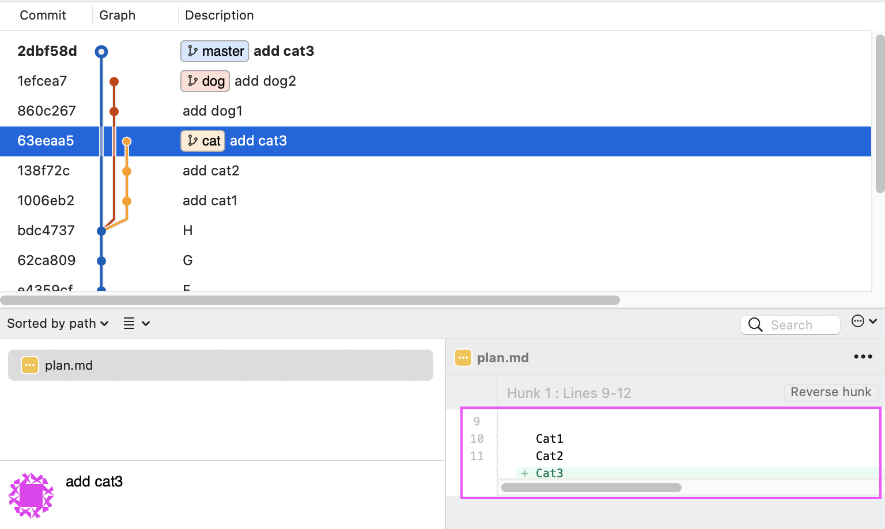

很神奇的功能。
簡述
假設這是目前的紀錄：
我現在位於 master 上，然後有 dog 和 cat 這兩個分支。現在我想要把 cat 的內容合併到 master，可是我只想要其中幾個 commit，不想要全部都併進去。
例如我只想要 add cat1 這筆紀錄的話，可以下這段指令：
1 | git cherry-pick 1006eb2 |
這樣 master 就只會多出 add cat1 的紀錄：

不要幫我 commit
有時候你可能想額外加一些東西，所以不希望一下完指令後就直接 commit 出去，這時候可以加上 --no-commit：
1 | git cherry-pick 1006eb2 --no-commit |
這樣子資料就會被放到「暫存區（Stage Area）」，等到全部修改完成後再自己 commit 就行囉。
對 cherry-pick 的誤解
我剛開始學這個指令的時後發現我對它背後的含義有一點誤解，所以特別寫這一段來解釋一下。
先回憶一下剛剛的範例：
在前面的示範中我們是從 cat 中取出 add cat1 的記錄到 master 中，不過如果現在是取出 add cat3 呢？
1 | git cherry-pick 63eeaa5 |
出來的結果就會變這樣子：
看起來沒什麼問題啊？怎麼了嗎？
單從歷史紀錄來看的話確實是沒有什麼問題，但其實 cherry-pick 並不是幫你把 add cat3 給抓出來，而是把 add cat3 給合併。
這樣子說可能聽不懂，所以我們來看一下 add cat3 修改了什麼：

add cat3 只有新一行 Cat3 而已，接著來看一下併完後的 master：
注意到了嗎？最後的內容並不是只有 add cat3 當下所做的改變，而是這個 commit 當下的所有檔案內容，換句話說就是整個合併進來。
所以這就跟我原本想的不太一樣，我以為它只會把「修改的內容」給抓出來而已，但實際上的意思是：
選擇我想要 merge 的位置，並且留下這個位置的 commit 訊息。
我舉幾個例子（這邊為了方便閱讀就不寫 hash 值了）：
1 | git cherry-pick 'add cat1' |
意思是「把 add cat1 合併到 master，但只留下 add cat1 的提交紀錄」
1 | git cherry-pick 'add cat2' |
意思是「把 add cat2 合併到 master，但只留下 add cat2 的提交紀錄」
1 | git cherry-pick 'add cat3' |
意思是「把 add cat3 合併到 master，但只留下 add cat3 的提交紀錄」
你可以把上面這幾個範例想成這樣：
1 | git merge 'add cat1' // 合併，但只保留 add cat1 的 commit 紀錄 |
總之你一定要記得：
- cherry-pick 只是用另一種方式來做 merge
- cherry-pick 只是用另一種方式來做 merge
- cherry-pick 只是用另一種方式來做 merge
不管你選擇的位置是哪裡，只要想成你是在做 merge 就好了，跟那個 commit 修改的內容一點關係也沒有。
那什麼時候該用 cherry-pick？
如果有聽懂剛剛的解釋，就能理解 cherry-pick 比較像是「可以自由選擇 commit 紀錄的 merge」，而不是把你想要的修改內容抽出來，所以比較正確的用法大概會是像這樣，一樣是剛剛的例子：
1 | git cherry-pick 63eeaa5 -x |
這邊把 add cat3 合併進來並加上 -x，-x 是用來讓 Git 自動幫我們產生「標準訊息」。
附註：因為 cherry-pick 併完後不會額外產生新的 commit，所以不仔細看的話可能不會知道這份紀錄是併過來的，所以才建議在 commit 內容中加上額外的訊息。
最後完成的結果就會像這樣：
就跟剛剛說的一樣，這裡實際上是幫你合併所有在 cat 中的所有修改，但只有保留 add cat3 的 commit 紀錄。順道一提這段 commit 訊息應該要修改成 add cat1 ~ 3 才比較符合這個 commit 實際上做的事情，但這邊只是為了示範所以就沒特別做了。
總之用 cherry-pick 其實只是令外一種合併方式而已，它可以讓你很輕鬆的拿掉不必要的 commit 紀錄。
如果要用 merge 來產出相同的結果，步驟就會變比較麻煩：
1 | git merge 63eeaa5 |
1 | git reset HEAD~3 // 取消最後 3 筆 commit 紀錄（但保留檔案） |
1 | git commit -am 'add cat3' // 加入暫存區並提交 |
所以兩種方法其實都行，端看你喜歡哪一種而已。